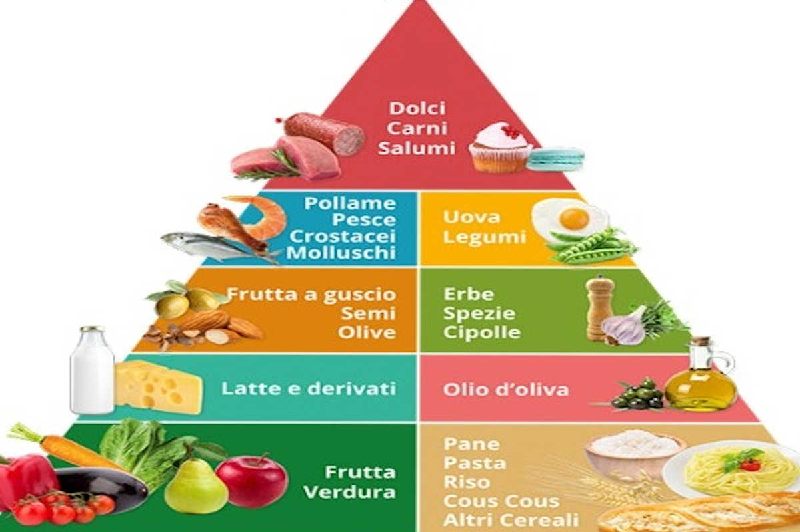

La piramide alimentare è una delle rappresentazioni grafiche più
utilizzate per esporre i principi alla base di una alimentazione sana.
La dieta mediterranea è uno stile di vita, più che un semplice elenco
di alimenti.
Alla base della piramide alimentare ci sono tante verdure, un po’ di
frutta e cereali.
Salendo, troviamo il latte e i derivati a basso contenuto di grassi.
Verso il vertice della piramide alimentare, ci sono gli alimenti da
consumare non ogni giorno, ma settimanalmente: sono quelli che
forniscono prevalentemente proteine, tra i quali dovremmo favorire il
pesce e i legumi.
Al vertice della piramide ci sono infine gli alimenti da consumare con moderazione: due porzioni o meno a settimana per le carni rosse. Infine i dolci, da consumare il meno possibile.
Pizza
Da un punto di vista nutrizionale, la pizza è da considerarsi un piatto
unico (anche se non perfettamente equlibrato), poiché, come
definizione vuole, contiene tutti i macronutrienti che dovrebbero
essere assunti ad ogni pasto secondo una dieta equilibrata:
carboidrati , proteine , grassi , oltre alle fibre .
Il lievito fa male perché altera la flora batterica intestinale,
impedendole di svolgere correttamente le sue funzioni
Mac Burger
Gli ingredienti del "Mac" non sono mai freschi e sono lavorati con additivi sconosciuti... Mentre la pizza ha molte calorie ma certamente non è malsana